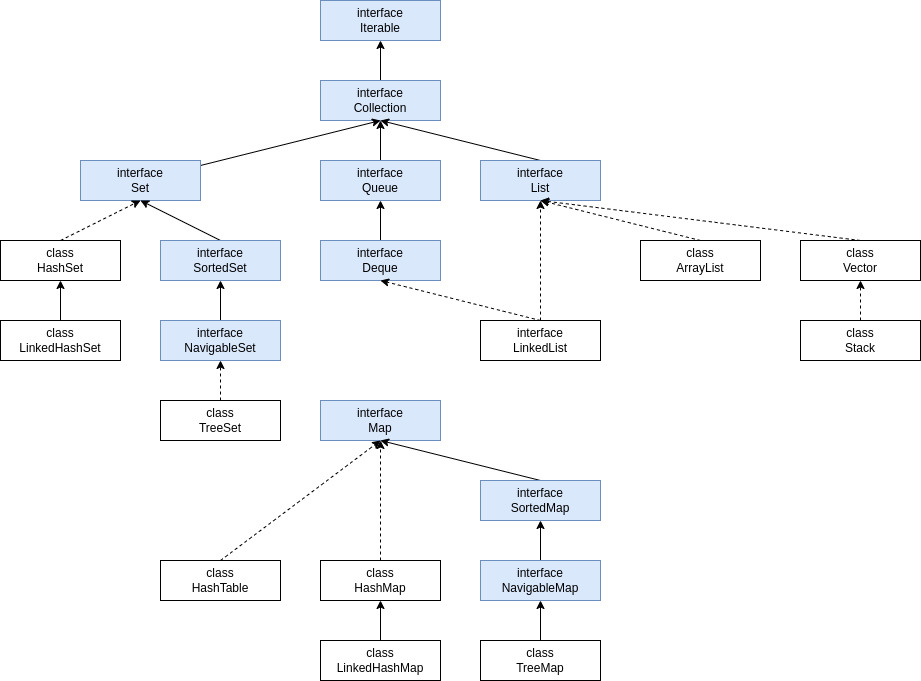

Содержание
Что это
Collections Framework - это специальные классы для хранения использования и удаление множества одинаковых
объектов. Нельзя работать с примитивами.

Основные разделы:
- Queue - FIFO.
- PriorityQueue - FIFO. Queue в котором приоритетные элементы будут помещаться в начало очереди.
Для пользовательских классов использует Comparator, для Integer, String, Character не нужно.
- Stack - FILO.
- List
- Map
- Set
Новые методы в коллекциях:
- Iterable.forEach(Consumer action)
- Map.forEach(BiConsumer action)
- Collection.removeIf(Predicate filter)
- Map.compute(K key,BiFunction remappingFunction) - если по ключу есть/нет
элемент, заменить/добавить значение на результат переданной функции.
- Map.computeIfPresent(K key, BiFunction remappingFunction) - ТОЛЬКО если
по ключу есть элемент, заменить значение на результат переданной функции.
- Map.computeIfAbsent(K key, Function mappingFunction) - если отсутствует по ключу,
добавить переданный ключ, а значение на результат переданной функции.
- Map.getOrDefault(Object key, V defaultValue) - возвращает значение, соответствующее ключу key. Если такой
ключ не существует — возвращает значение по умолчанию.
- Map.merge(K key, V value, BiFunction remappingFunction)
Если в вашей Map ключ key не существует, или value для этого ключа равно null — метод добавляет в Map
переданную пару key-value.
Если ключ Key существует и его value != null — метод меняет его value на результат выполнения переданной
функции remappingFunction.
Если remappingFunction возвращает null - key удаляется из коллекции.
- Map.putIfAbsent(K key, V value) - если нужно положить в Map и не заменять значение, если элемент по
ключу уже лежит.
- Map.replace и Map.replaceAll()
Map.replace(K key, V newValue — заменяет значение ключа key на newValue, если такой ключ существует.
Если нет — ничего не происходит.
Map.replace(K key, V oldValue, V newValue) — делает то же самое, но только если текущее значение key
равно oldValue.
Map.replaceAll(BiFunction function) — заменяет все значения value на
результат выполнения функции function.
Вопросы на собеседование:
//TODO Вынести Iterator в отдельный раздел
Методы Iterator
- boolean hasNext()
- E next()
- void remove()